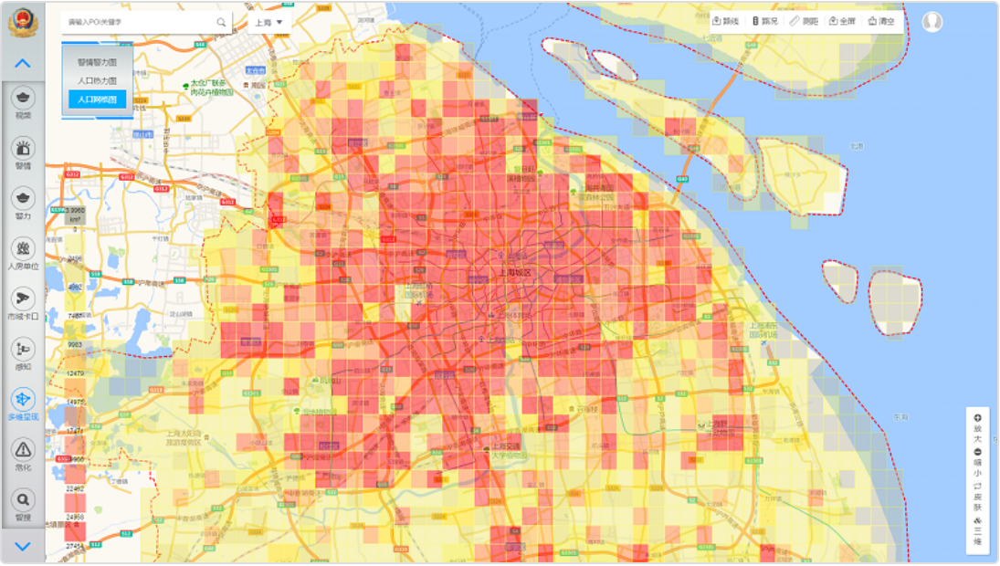

应用现状
PGIS已经在世界很多国家的警察部门得到了应用，起源于美国纽约警察局的Comp Stat警务管理模型和英国国家情报模型都是发展较为成熟的业务模型。国外的警察部门更倾向于将PGIS应用于警务指挥与调度，如澳大利亚维多利亚警局利用PGIS实施现场调度，成功维护了2000年墨尔本世界经济论坛会议的安保秩序，这次会议的顺利召开也让世界各国重新认识并认可了PGIS的实用性。

人口管理
PGIS强大的信息存储和数据筛查功能将人员信息管理做到及时高效，全国联网共建共享的标准化数据库又让信息跨地域查询得以实现。
视频监控管理
国内PGIS多采用区域网格化管理，对各种地图平台实时更新的图片，如无人机航拍、街道监控、卫星图等区域影像进行全天候的24小时监控。利用PGIS的空间分析技术可评估监控数据，判断某个区域在某个时间点之前和之后的犯罪水平、犯罪预防和警务工作的实践效果是否达到预期。除了管理监控信息外，同时关注车辆管控和道路数据的测量。


新型情报研判体系
GIS技术的出现使得传统的犯罪情报研究体系得到极大改变，形成了以GIS技术、警用电子信息系统(MIS)等高新技术为核心，以犯罪时空轨迹分析和数据可视化为基础的新型情报研判体系。 新型情报研判体系正向着数据化、多维化、可视化、智能化的方向发展。犯罪活动的实时分布、趋势预测工作已经在可视化技术的辅助下从单一的文本数据演变为清晰的数据曲线和地理犯罪图谱，情报数据的搜集、筛选、分析、挖掘、制图等越来越依靠SPSS和Ucinet的集群大数据分析及可视化工具来工作。